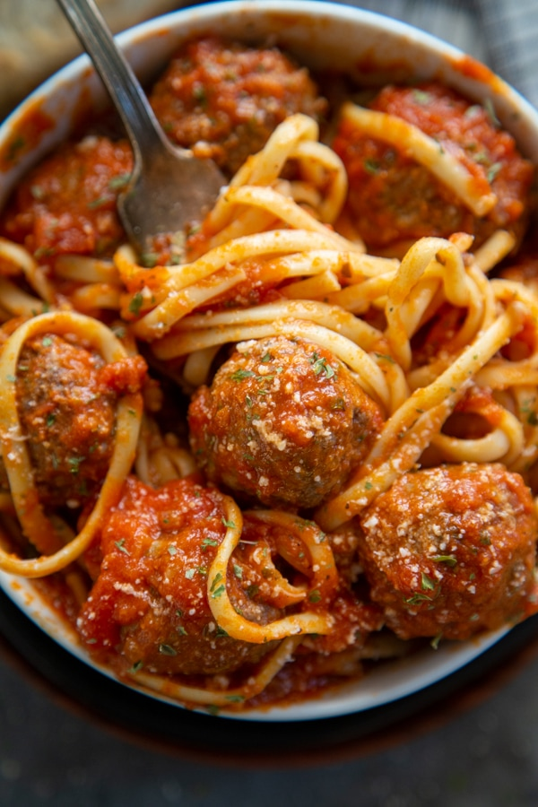

Ingredients
- 8 oz spaghetti
- 10–12 frozen meatballs (or homemade)
- 1 jar marinara sauce (24 oz)
- 1 tbsp olive oil (optional)
- 2 cloves garlic (optional)
- Salt
- Parmesan (optional)
Cooking Steps
- Boil water, add salt, cook spaghetti (follow box time).
- In another pan, warm marinara sauce on medium-low.
- Add meatballs to sauce, cover, simmer 15–20 min (until hot).
- Drain pasta, mix with sauce (or plate pasta then add meatballs + sauce).
- Top with parmesan.
Picture
